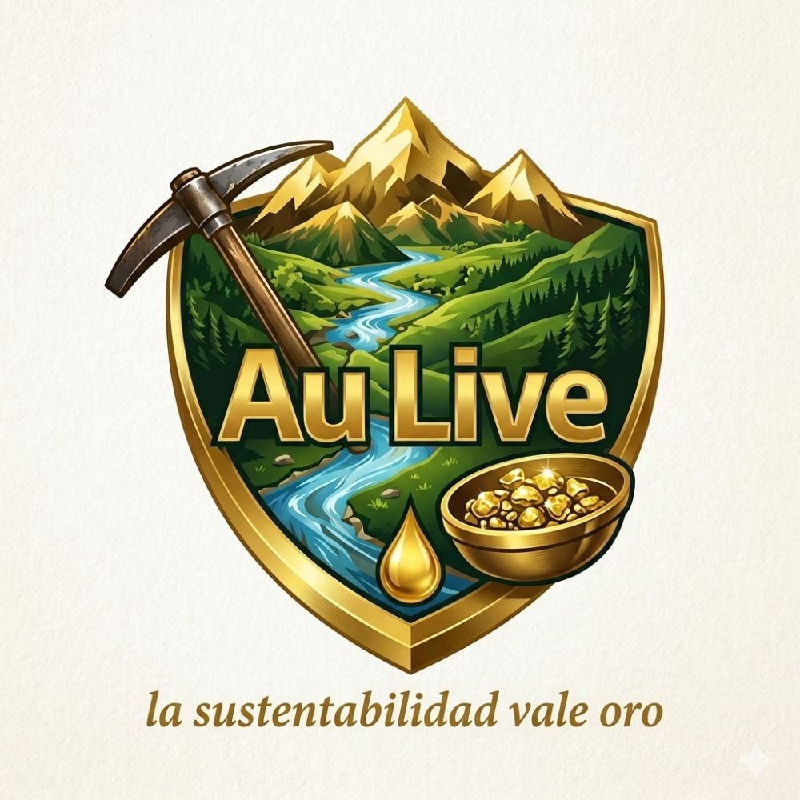
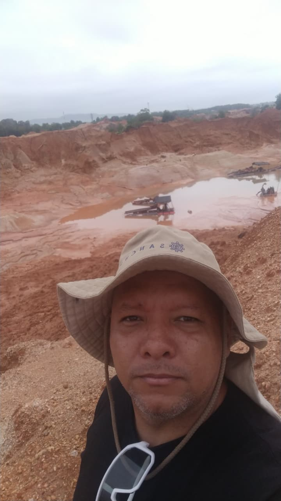
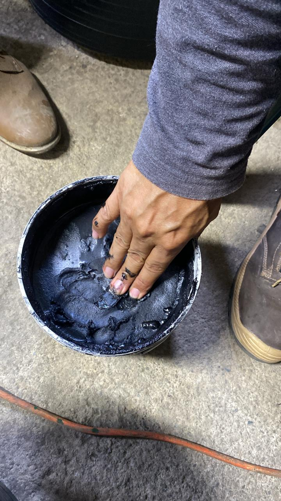
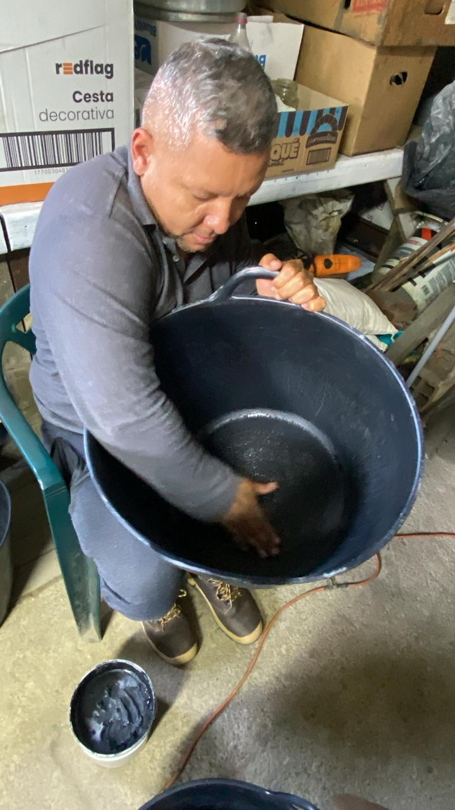
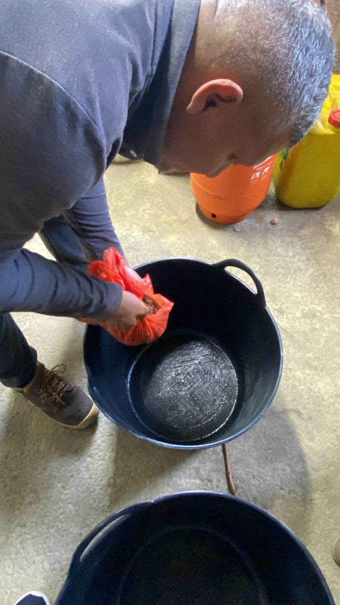
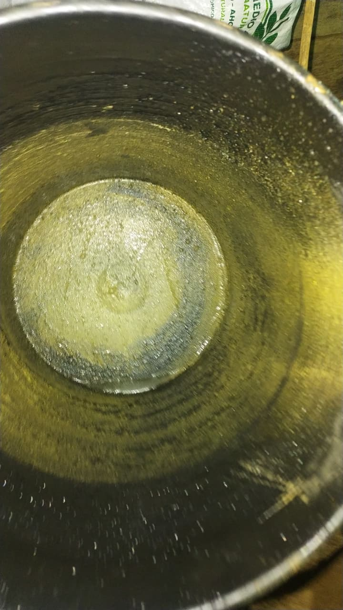

La tecnología que sustituye al mercurio con ciencia verde aplicada.

Inventor y pionero en la minería responsable. Ha dedicado años de investigación en terreno para desarrollar una matriz orgánica capaz de capturar el oro fino sin necesidad de químicos nocivos. Su tecnología, Au Live, representa un cambio de paradigma para la minería artesanal y de pequeña escala (MAPE).
Recuperación técnica comprobada de oro fino libre.
Cero uso de mercurio, cianuro o ácidos contaminantes.
Cumple con los más altos estándares ambientales y sociales.

1. Matriz Orgánica Vegetal

2. Aplicación en Recipiente

3. Captura y Proceso

4. Resultado: Oro Recuperado